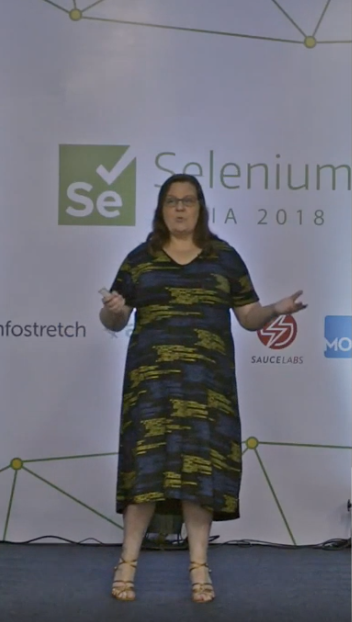

Leadership Team
We believe in people to people, supported by an organization. SpeakEasy is on a mission,
supported by great people volunteering as mentors, conference organizers seeking new voices
and speakers bringing their voices for others to learn from. We have a leadership team of four people,
facilitating these connections and creating structures for our future success.
You can get in touch with any of the people in the leadership team personally. Each of us individually
will bring things for consideration, and make the magic happen together with you.
Abby Bangser (UK)
Abby is the glue that brings us all together, and has been defining a lot of the ways of working for
Speak Easy. She is
also the automation guru, and volunteer of all things technical.
She's started off as an aspiring speaker, graduating from first talks to regular talks delivering
great contents consistently.
And now she is helping new speakers like herself get started through SpeakEasy.
Ash Coleman (US)
Ash is the fresh voice of future in the new leadership team. She's a connection point to many
conferences we work with, and
takes up initiatives to improve SpeakEasy ways of working.
Kristine Corbus (Germany)
Kristine is the heart of speaker - mentor pairings. She seeks for great matches in what people are
interested in,
and deals with all the introducing practicalities. She's been at it before the new leadership team
and is a SpeakEasy senior.
Maaret Pyhäjärvi (Finland)
Maaret deals with financial structures, conference communication, Twitter communication and random
web stuff. She's a
serial mentor with SpeakEasy, who has been both actively paired through SpeakEasy enrollment
channels and
been found online by aspiring speakers, registering their mentorship with SpeakEasy later.
Maaret is also speaking a lot in conferences, meetups and webinars, doing about 30 sessions a
year and
totaling close to 400 sessions by now. She also organizes her own conference,
European Testing Conference,
that travels to different European locations every year.
Her day job is working as Senior Manager leading a team of 12 developers at F-Secure. She
identifies still as tester,
and is also liking the moniker polyglot programmer as something that describes her.
